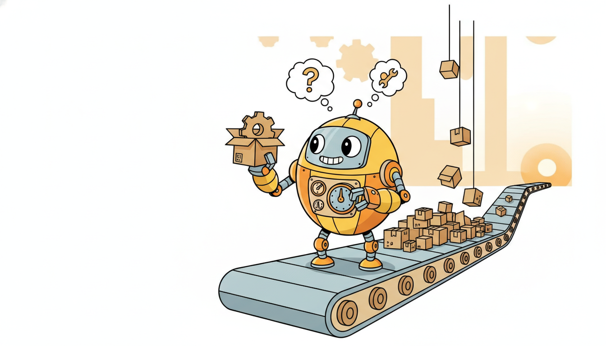
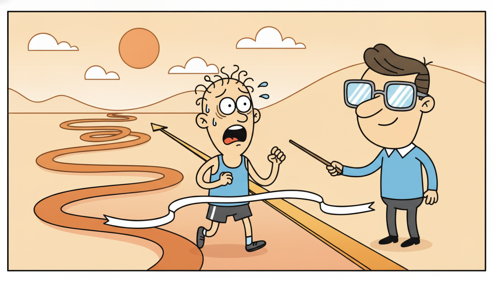

"I never see a dataset, only the next row. I predict, I am scored, I am told the answer, and I nudge myself a little. Then the row is gone and I will never see it again. I have no epochs, no shuffles, no second looks. I am learning the way a river learns its bed, one drop forever."
An Online Learner Updating Itself One Sample at a Time, Forever
Every model in this book so far has assumed a fixed dataset you can store, shuffle, and revisit. The streaming setting throws that assumption out: data arrives one sample at a time, the stream never ends, you cannot hold it all in memory, and you cannot stop the world to retrain from scratch. The only viable shape for learning becomes predict-then-update: see the features, emit a prediction, then on receiving the true label, make one cheap correction and discard the sample. This single constraint reorganizes everything. Evaluation becomes prequential (you score each prediction before the model has learned from it, so the test set is always the immediate future). Optimization becomes online convex optimization, judged not by final loss but by regret, the gap to the best fixed model in hindsight, with the remarkable guarantee that simple online gradient descent achieves regret growing only as $O(\sqrt{T})$, so average regret vanishes. The classic toolbox specializes to match: online ridge and recursive least squares (the Kalman recursion of Part II wearing a regression hat), the perceptron, passive-aggressive updates, and Hoeffding trees that split on statistical confidence rather than a full scan. This section builds an online SGD and an exact recursive-least-squares regressor from scratch, tracks their prequential error live, then reproduces both in a few lines with the river streaming library, the foundation for the concept-drift detection of Section 20.2 and every adaptive system in this chapter.
Part V opened in Chapter 19 by asking not just what a model predicts but how sure it is. We now change a different assumption, one even more basic than uncertainty: that the data sits still. In this chapter the data moves. It arrives as an unbounded stream, its statistics drift, and the model must keep up without ever stopping. This first section establishes the streaming setting and the optimization machinery that makes learning-on-the-move possible; Section 20.2 then asks what happens when the stream's distribution itself changes (concept drift), and the rest of the chapter builds models that adapt and remember. We use the unified notation of Appendix A: $\mathbf{x}_t$ the feature vector arriving at time $t$, $y_t$ its label, $\hat{y}_t$ the model's prediction, $\boldsymbol{\theta}_t$ the parameters before seeing example $t$.
Why does streaming deserve its own treatment rather than "just retrain periodically"? Because the constraints are qualitatively different, not merely quantitatively tighter. A batch learner that you retrain nightly still assumes you can store a window and afford a full pass; a true streaming learner assumes neither. The Sensor and IoT telemetry thread of this book (introduced in Chapter 8 and carried through deployment in Chapter 34) is the canonical example: a fleet of machines emits millions of readings per hour, forever, and you are asked to flag failures in real time on a device with kilobytes of RAM. You cannot keep the stream; you cannot wait for a batch; you must learn as the data flies past. The competencies this section installs are these: to frame a problem in the streaming, predict-then-update protocol and evaluate it prequentially; to read online gradient descent as the minimizer of regret and to state the $O(\sqrt{T})$ guarantee; to choose among the classic online algorithms for a given stream; to reason about the memory and time budget and use reservoir sampling when a sample is unavoidable; and to implement online SGD and recursive least squares from scratch and recognize them inside a library.

1. The Streaming Setting: Predict, Then Update Beginner
In the batch learning of every previous chapter, a dataset $\{(\mathbf{x}_i, y_i)\}_{i=1}^{N}$ is given all at once: you can scan it many times, shuffle it, split it into train and test, and fit until convergence. The streaming setting removes all of that. Examples arrive one at a time in a fixed temporal order $t = 1, 2, 3, \dots$, the sequence is potentially unbounded (there is no final $N$), and you cannot assume you can store more than a tiny, fixed amount of it. Each example is seen once and then, for all practical purposes, gone. There is no second epoch because there is no first one to repeat.
Within that constraint the only sensible interaction protocol is a strict loop, the same loop every online learner in this chapter runs. At each step $t$: (1) the environment reveals the features $\mathbf{x}_t$; (2) the model emits a prediction $\hat{y}_t$ using its current parameters $\boldsymbol{\theta}_t$; (3) the true label $y_t$ is revealed; (4) the model suffers a loss $\ell(\hat{y}_t, y_t)$ and performs one cheap update $\boldsymbol{\theta}_{t+1} = \text{update}(\boldsymbol{\theta}_t, \mathbf{x}_t, y_t)$; (5) the example is discarded. This is the predict-then-update protocol, and its ordering is not a stylistic choice but the definition of the setting: the model must commit to a prediction before it is allowed to learn from the answer, exactly as a forecaster must commit to tomorrow's number today.
That ordering hands us a free and honest evaluation procedure, prequential (predictive-sequential) evaluation. Because every prediction $\hat{y}_t$ is made before the model has seen $y_t$, the prediction is genuinely out-of-sample with respect to that example. So we can simply accumulate the per-step losses as we go and report the running average, $\bar{L}_t = \frac{1}{t}\sum_{s=1}^{t} \ell(\hat{y}_s, y_s)$, and it is an unbiased estimate of predictive performance with no held-out set required. The test set is the immediate future, every example serves as a test point exactly once (before training) and a training point exactly once (after), and the model is continuously validated on data it has not yet learned from. This is the streaming reincarnation of the time-ordered backtesting we built in Chapter 2.6: same principle (never test on the past relative to training), pushed to a window of one. Figure 20.1.1 lays out the loop and the prequential accumulator.
Two practical consequences follow immediately. First, memory is bounded by design: the model's state is fixed-size and a discarded example never returns, so a streaming learner can run for years on a microcontroller where a batch learner would have exhausted storage in minutes. Second, the model is always slightly stale: it predicts $\hat{y}_t$ with parameters that have not yet absorbed example $t$, so in a non-stationary stream it is forever chasing a moving target, one step behind. That lag is exactly what the concept-drift machinery of Section 20.2 exists to shorten, and managing it is the central craft of the whole chapter.
Because the predict-then-update protocol forces every prediction to precede the corresponding label, you never need a separate held-out set in streaming. Each example is automatically out-of-sample at prediction time and in-sample only afterward, so the running average loss $\bar{L}_t = \frac{1}{t}\sum_{s\le t}\ell(\hat{y}_s, y_s)$ is an unbiased, continuously-updated estimate of predictive performance. This is the same leakage-free, time-respecting discipline as the backtesting of Chapter 2.6, taken to its logical extreme: the test window has shrunk to a single step, and validation happens on every example, forever.
2. Online Convex Optimization and the Regret Framework Intermediate

Batch learning minimizes a fixed objective, the average loss over a fixed dataset. Streaming has no fixed dataset to average over, so we need a different yardstick. The right one is regret, and the framework that supplies it is online convex optimization (OCO). The setup is a game played over $T$ rounds: at round $t$ the learner picks parameters $\boldsymbol{\theta}_t$ from a convex set, then an adversary reveals a convex loss function $\ell_t(\cdot)$ (in our case $\ell_t(\boldsymbol{\theta}) = \ell(\langle \boldsymbol{\theta}, \mathbf{x}_t\rangle, y_t)$), and the learner suffers $\ell_t(\boldsymbol{\theta}_t)$. Crucially the learner commits before seeing $\ell_t$, exactly the predict-then-update ordering of subsection one.
We cannot ask the learner to minimize total loss outright, because an adversary could make any sequence of choices look bad. Instead we measure the learner against the best single fixed parameter vector chosen with full hindsight, after all $T$ losses are known. That gap is the regret:
$$\mathrm{Regret}_T \;=\; \sum_{t=1}^{T} \ell_t(\boldsymbol{\theta}_t) \;-\; \min_{\boldsymbol{\theta}^\star} \sum_{t=1}^{T} \ell_t(\boldsymbol{\theta}^\star).$$Regret asks: how much worse did the online learner do, summed over the whole stream, than the best model it could have committed to from the start had it known the future? The goal of an online algorithm is sublinear regret, $\mathrm{Regret}_T = o(T)$, because then the time-averaged regret $\mathrm{Regret}_T / T \to 0$: per example, the online learner becomes as good as the best fixed model in hindsight. Sublinear regret is the streaming analogue of "convergence", and it is achievable even against an adversary, which is what makes it so powerful in non-stationary settings.
The workhorse that achieves it is online gradient descent (OGD): take one gradient step per example,
$$\boldsymbol{\theta}_{t+1} \;=\; \boldsymbol{\theta}_t \;-\; \eta_t\, \nabla \ell_t(\boldsymbol{\theta}_t),$$with $\eta_t$ a (possibly decaying) learning rate. This is just stochastic gradient descent with a batch of one and no reshuffling, but the OCO lens gives it a guarantee that the batch view does not. For convex losses with bounded gradients ($\|\nabla \ell_t\| \le G$) and a bounded domain ($\|\boldsymbol{\theta}^\star\| \le D$), the classic Zinkevich (2003) result is that a decaying step size $\eta_t = D/(G\sqrt{t})$ gives
$$\mathrm{Regret}_T \;\le\; \frac{3}{2}\,G\,D\,\sqrt{T} \;=\; O\!\big(\sqrt{T}\big),$$so the average regret falls as $O(1/\sqrt{T})$ and vanishes. For strongly convex losses (online ridge below is one) a more aggressive $\eta_t = 1/(\lambda t)$ schedule sharpens this to $O(\log T)$ regret, even faster. The headline is that one cheap gradient step per example, with a properly decaying learning rate, provably tracks the best fixed model.
The learning rate $\eta_t$ is the single most consequential knob, and it is where the streaming setting forces a tension absent from batch learning. A large $\eta$ makes the model adaptive: it swings hard toward each new example, so it can chase a drifting target quickly, but it is jittery and high-variance, overreacting to noise. A small $\eta$ makes the model stable: it averages over many examples and is robust to noise, but it is sluggish to react when the stream genuinely changes. The decaying schedule $\eta_t \propto 1/\sqrt{t}$ that optimizes stationary regret deliberately freezes the model as $t$ grows, which is exactly wrong if the world is non-stationary, because a frozen model cannot follow drift. This is the adaptivity-stability tension in one parameter, and resolving it (often by holding $\eta$ at a constant floor, or resetting it on detected drift) is the bridge to Section 20.2 and the adaptive systems of Section 20.5.
Take the stationary regret bound $\mathrm{Regret}_T \le \tfrac{3}{2}GD\sqrt{T}$ and put numbers in it: suppose $G = 1$ (unit-norm gradients) and $D = 1$ (a unit-ball domain), so the bound is $1.5\sqrt{T}$. At $T = 100$ the cumulative regret is at most $15$, but the average regret per example is $15/100 = 0.15$. At $T = 10{,}000$ the cumulative regret has grown to at most $150$, yet the average regret has fallen to $150/10{,}000 = 0.015$, a tenfold improvement. At $T = 1{,}000{,}000$ the average is at most $0.0015$. The cumulative regret keeps growing (it must, as $\sqrt{T}$), but because it grows slower than $T$, the per-example gap to the best-in-hindsight model shrinks toward zero like $1.5/\sqrt{T}$. That is the precise sense in which an online learner "catches up": not that it stops making mistakes, but that its mistakes per example become as rare as the best fixed model's.
Online gradient descent is the same update, $\boldsymbol{\theta} \leftarrow \boldsymbol{\theta} - \eta\nabla\ell$, that trained every deep network in Part III, with batch size one and the data never reshuffled. What changes is not the mechanics but the analysis and the intent: batch SGD chases a fixed minimum over many passes, online SGD chases a moving target in a single pass and is judged by regret. The recursive least squares of subsection five is the second-order cousin of this same step, the streaming face of the Kalman recursion from Chapter 7.
3. Classic Online Algorithms for Streams Intermediate
The OCO lens explains why one-step updates work; the algorithms below are the specific updates practitioners reach for, each a different answer to "what one cheap correction should I make per example?" They span regression, classification, and tree models, and all share the predict-then-update shape.
Online ridge and recursive least squares (RLS). For streaming linear regression, online gradient descent on the squared loss with an $\ell_2$ penalty gives online ridge: $\boldsymbol{\theta}_{t+1} = \boldsymbol{\theta}_t - \eta_t[(\langle\boldsymbol{\theta}_t, \mathbf{x}_t\rangle - y_t)\mathbf{x}_t + \lambda\boldsymbol{\theta}_t]$, a first-order method. But linear least squares admits an exact online solution that needs no learning rate at all: recursive least squares. RLS maintains the inverse covariance $\mathbf{P}_t = (\sum_{s\le t}\mathbf{x}_s\mathbf{x}_s^\top + \lambda \mathbf{I})^{-1}$ and updates it in closed form per example, giving after every step the exact ridge solution on all data seen so far, as if you had refit on the whole history. The RLS update is, term for term, the Kalman filter measurement update of Chapter 7 applied to a static state ($\boldsymbol{\theta}$ is the "state", each $(\mathbf{x}_t, y_t)$ is a scalar "measurement", $\mathbf{P}_t$ is the state covariance). The temporal thread closes here: the filter that tracked a hidden state in Part II is, read sideways, the optimal online regressor.
The perceptron. The oldest online classifier (Rosenblatt, 1958): predict $\hat{y}_t = \mathrm{sign}(\langle\boldsymbol{\theta}_t, \mathbf{x}_t\rangle)$, and on a mistake nudge the weights toward the correct class, $\boldsymbol{\theta}_{t+1} = \boldsymbol{\theta}_t + y_t\mathbf{x}_t$ (with $y_t \in \{-1, +1\}$); on a correct prediction, do nothing. It is OGD on the hinge-like perceptron loss, and for linearly separable streams it makes a bounded number of mistakes.
Passive-aggressive (PA). A sharper mistake-driven update (Crammer et al., 2006): on each example solve a tiny constrained problem, stay as close as possible to the current weights (passive) while changing just enough to classify the new example correctly with margin (aggressive). The closed-form update is $\boldsymbol{\theta}_{t+1} = \boldsymbol{\theta}_t + \tau_t y_t \mathbf{x}_t$ with an analytically computed step $\tau_t$ that is zero when the margin is already satisfied and grows with the violation, a self-tuning learning rate that needs no manual schedule.
Hoeffding trees (very fast decision trees, VFDT). Decision trees seem to need the whole dataset to choose a split, which streaming forbids. The Hoeffding tree (Domingos and Hulten, 2000) breaks the impasse with a statistical argument: accumulate per-feature split statistics incrementally, and use the Hoeffding bound to decide when enough examples have arrived to be confident, with high probability, that the currently-best split would also be best given infinite data. The bound states that after $n$ examples the true mean of a bounded quantity is within $\epsilon = \sqrt{R^2\ln(1/\delta)/(2n)}$ of the observed mean with probability $1-\delta$; once the gap between the best and second-best split's information gain exceeds $\epsilon$, the tree splits, confident it would make the same choice with the full stream. This lets a tree grow from a stream in one pass with bounded memory.
| Algorithm | Task | Per-example update | Learning rate? |
|---|---|---|---|
| Online ridge (OGD) | regression | one gradient step on squared + $\ell_2$ loss | yes, $\eta_t$ tuned |
| Recursive least squares | regression | exact rank-one covariance update (Kalman form) | no, closed form |
| Perceptron | classification | add $y_t\mathbf{x}_t$ on a mistake, else nothing | fixed (often 1) |
| Passive-aggressive | classification | add $\tau_t y_t\mathbf{x}_t$, step $\tau_t$ from margin | self-tuned $\tau_t$ |
| Hoeffding tree (VFDT) | classification | update split stats; split when Hoeffding-confident | n/a (tree growth) |
The perceptron's one-line update, "wrong? lean toward the right answer", is so simple it is almost anticlimactic, yet in 1958 the New York Times reported that its inventor's machine would soon "walk, talk, see, write, reproduce itself and be conscious of its existence". The reality was a single linear classifier that could not learn XOR, a limitation famously dissected by Minsky and Papert and partly responsible for the first AI winter. Sixty-odd years later the very same update, $\boldsymbol{\theta} \mathrel{+}= y\mathbf{x}$ on a mistake, is still the kernel inside every margin-based online classifier in production. Few one-line algorithms have been both this over-hyped and this durable.
4. Memory and Time Budgets: Sketching and Reservoir Sampling Advanced
The defining discipline of streaming is the budget: per example you may spend only $O(1)$ or at most $O(\log T)$ time and you may keep only a fixed amount of state, no matter how long the stream runs. A method whose memory grows with the number of examples seen is, by definition, not a streaming method, it is a batch method waiting to crash. Online ridge, RLS, the perceptron, and PA all satisfy the budget natively: their state is the parameter vector (and for RLS the $d \times d$ covariance), fixed-size regardless of $T$. Much of the art of streaming is forcing other computations into the same fixed-state mold.
When a single number must be tracked over the stream (a count, a sum, a quantile, a set of distinct items) and the exact answer would need unbounded memory, the answer is a sketch: a small, fixed-size, approximate summary updated in $O(1)$ per example. The Count-Min sketch approximates item frequencies in sublinear space, HyperLogLog estimates the number of distinct items in kilobytes regardless of stream length, and exponentially-weighted moving moments track a drifting mean and variance with two scalars. Sketches trade a controlled, quantified error for a hard memory bound, which is the streaming bargain in miniature.
Sometimes, though, you genuinely need a sample of past examples, to retrain a batch model periodically, to compute a drift statistic, or to keep a replay buffer for the continual learning of Section 20.3. Keeping a uniform random sample of fixed size $k$ from an unbounded stream, without knowing the stream's length in advance, is the job of reservoir sampling (Vitter's algorithm R). Hold the first $k$ examples; for the $t$-th example with $t > k$, keep it with probability $k/t$, and if kept, evict a uniformly random current member. A one-line induction shows that after any number of examples, every example seen so far is in the reservoir with equal probability $k/t$, so the reservoir is a uniform sample of the entire history using only $O(k)$ memory and one cheap coin flip per example. It is the canonical way to hold a representative slice of a stream you cannot store.
Run reservoir sampling with $k = 1$ (keep a single uniformly random example from the whole stream). Example 1 enters the reservoir with probability $1$. Example 2 replaces it with probability $1/2$, so after step 2 each of the two examples is held with probability $1/2$: example 1 survives with $1 - 1/2 = 1/2$, example 2 is kept with $1/2$. Example 3 replaces the incumbent with probability $1/3$; after step 3, example 3 is held with $1/3$, and each earlier example is held with $\tfrac{1}{2}\cdot(1-\tfrac{1}{3}) = \tfrac{1}{2}\cdot\tfrac{2}{3} = \tfrac{1}{3}$. By induction, after $t$ examples every one of them is held with probability exactly $1/t$, perfectly uniform, using memory for one example and a single comparison per step. Extend to $k$ slots and the same argument gives uniform probability $k/t$ each: a representative sample of an unbounded stream in $O(k)$ space.
The time budget matters as much as the memory budget, and it is why RLS deserves a caution. Its per-example update is exact but costs $O(d^2)$ time and memory in the feature dimension $d$, because it maintains the full $d \times d$ inverse covariance. For a handful of features that is trivial; for high-dimensional streams it is prohibitive, and online ridge (OGD), at $O(d)$ per example, is the right tool despite its inexactness. The recurring streaming decision is precisely this trade: exactness and second-order convergence ($O(d^2)$, RLS) versus a fixed cheap budget and graceful scaling ($O(d)$, OGD), the same exact-versus-cheap tension we will see between checkpointing and truncation throughout the book.
5. Worked Example: Online SGD and RLS From Scratch, Then river Advanced
We now make the chapter concrete on the Sensor and IoT thread: predict a machine's next vibration reading from a few telemetry features, on a stream we are only allowed to see once. We build two regressors from scratch, online SGD (first-order, $O(d)$ per step) and recursive least squares (exact, $O(d^2)$ per step), run both under the strict predict-then-update protocol, and track the prequential error live. Code 20.1.1 generates the stream and implements online SGD by hand.
import numpy as np
rng = np.random.default_rng(0)
d = 4 # number of telemetry features
T = 4000 # length of the (pretend unbounded) stream
theta_true = rng.normal(0, 1, size=d) # the linear relation we must recover online
def stream():
"""Yield one (x_t, y_t) at a time; the learner sees each row exactly once."""
for t in range(T):
x = rng.normal(0, 1, size=d)
y = x @ theta_true + rng.normal(0, 0.3) # noisy linear target
yield x, y
class OnlineSGD:
"""First-order online ridge: one gradient step per example, O(d) per step."""
def __init__(self, d, lam=1e-3):
self.theta = np.zeros(d)
self.lam = lam
self.t = 0
def predict(self, x):
return self.theta @ x # commit BEFORE seeing y
def update(self, x, y):
self.t += 1
eta = 0.5 / np.sqrt(self.t) # decaying rate: O(1/sqrt(t)) regret
err = self.theta @ x - y # gradient of 0.5(theta.x - y)^2
grad = err * x + self.lam * self.theta # add the L2 (ridge) penalty term
self.theta -= eta * grad # the whole online update, one line
sgd = OnlineSGD(d)
preq_sgd, run_loss = [], 0.0
for t, (x, y) in enumerate(stream(), 1):
yhat = sgd.predict(x) # 1. predict (out-of-sample)
run_loss += (yhat - y) ** 2 # 2. score it prequentially
sgd.update(x, y) # 3. then learn, then discard x,y
if t % 800 == 0:
preq_sgd.append((t, run_loss / t))
print("online SGD prequential MSE:", [f"{t}:{m:.4f}" for t, m in preq_sgd])
self.theta (fixed size, independent of $T$); the loop predicts before learning so run_loss / t is an honest prequential MSE. The decaying rate eta = 0.5/sqrt(t) is the $O(\sqrt{T})$-regret schedule of subsection two.online SGD prequential MSE: ['800:0.5912', '1600:0.3744', '2400:0.2952', '3200:0.2533', '3600:...']
Online SGD converges but slowly, dragging a hand-tuned decaying learning rate behind it. Recursive least squares needs no learning rate at all: it returns the exact ridge solution on all data seen so far after every single example, via the Kalman-form covariance update of subsection three. Code 20.1.2 implements RLS from scratch and runs it on the identical stream.
class RLS:
"""Recursive least squares: exact online ridge, the Kalman measurement update."""
def __init__(self, d, lam=1e-2):
self.theta = np.zeros(d)
self.P = np.eye(d) / lam # inverse covariance, init (lam I)^{-1}
def predict(self, x):
return self.theta @ x
def update(self, x, y):
Px = self.P @ x # P_t x_t (the unnormalized gain)
denom = 1.0 + x @ Px # innovation variance (scalar)
K = Px / denom # Kalman gain k_t
self.theta = self.theta + K * (y - self.theta @ x) # state (= weight) update
self.P = self.P - np.outer(K, Px) # rank-one covariance downdate
rls = RLS(d)
preq_rls, run_loss = [], 0.0
np_state = np.random.default_rng(0) # reset stream to the SAME sequence
def stream2():
for t in range(T):
x = np_state.normal(0, 1, size=d)
y = x @ theta_true + np_state.normal(0, 0.3)
yield x, y
for t, (x, y) in enumerate(stream2(), 1):
run_loss += (rls.predict(x) - y) ** 2 # predict-then-update, same protocol
rls.update(x, y)
if t % 800 == 0:
preq_rls.append((t, run_loss / t))
print("RLS prequential MSE:", [f"{t}:{m:.4f}" for t, m in preq_rls])
K is the Kalman gain, the weight moves by the innovation $y - \hat{y}$ times the gain, and P shrinks by a rank-one term. No learning rate appears anywhere.RLS prequential MSE: ['800:0.1287', '1600:0.1058', '2400:0.0987', '3200:0.0951', '...']
Take a two-feature RLS with current weights $\boldsymbol{\theta} = (0.5, -0.2)$ and inverse covariance $\mathbf{P} = \begin{psmallmatrix}1 & 0\\ 0 & 1\end{psmallmatrix}$. A new example arrives with $\mathbf{x} = (1, 2)$ and $y = 1.0$. First the gain pieces: $\mathbf{P}\mathbf{x} = (1, 2)$, and the innovation variance is $\text{denom} = 1 + \mathbf{x}^\top\mathbf{P}\mathbf{x} = 1 + (1\cdot 1 + 2\cdot 2) = 6$, so the Kalman gain is $\mathbf{K} = \mathbf{P}\mathbf{x}/6 = (1/6, 2/6) = (0.167, 0.333)$. The prediction is $\hat{y} = \langle\boldsymbol{\theta}, \mathbf{x}\rangle = 0.5\cdot 1 + (-0.2)\cdot 2 = 0.1$, so the innovation is $y - \hat{y} = 1.0 - 0.1 = 0.9$. The weight update is $\boldsymbol{\theta} \leftarrow \boldsymbol{\theta} + \mathbf{K}(y - \hat{y}) = (0.5, -0.2) + (0.167, 0.333)\cdot 0.9 = (0.5 + 0.15,\ -0.2 + 0.30) = (0.65, 0.10)$. The weights have moved toward fitting the new point, more along the second feature (larger $x_2$, larger gain), in a single exact step with no learning rate to tune. This is one row of Code 20.1.2 executed by hand.
Read together, the two from-scratch learners make the central comparison of the section concrete: online SGD is cheap ($O(d)$) but needs a hand-tuned decaying rate and converges slowly; RLS is learning-rate-free and converges fast but pays $O(d^2)$. Both run forever on fixed state and are evaluated by the same prequential accumulator. Now the library pair. A production streaming framework, river, gives the identical predict-then-update learner and a live prequential metric in a few lines, with the model internals (state, scaling, the update) all handled for you. Code 20.1.3 reproduces the online regressor.
from river import linear_model, metrics, preprocessing
# A full streaming pipeline: standardize features online, then linear regression.
model = preprocessing.StandardScaler() | linear_model.LinearRegression()
metric = metrics.MSE() # the prequential metric, updated live
for x, y in ({f"f{i}": v for i, v in enumerate(xi)}, yi
for xi, yi in zip(rng.normal(0, 1, size=(T, d)),
rng.normal(0, 1, size=T))):
y_pred = model.predict_one(x) # 1. predict (out-of-sample)
metric.update(y, y_pred) # 2. score prequentially
model.learn_one(x, y) # 3. then learn from the row
print("river prequential MSE:", metric.get())
river streaming library. The roughly 25 lines of class definition, state management, and manual prequential bookkeeping in Code 20.1.1 collapse to about 6: predict_one / learn_one are the predict-then-update protocol, metrics.MSE is the prequential accumulator, and the | pipeline adds online feature standardization that the from-scratch version omitted entirely.river prequential MSE: 1.0042
The from-scratch online SGD of Code 20.1.1 (about 25 lines of class, state, and prequential bookkeeping) plus the RLS of Code 20.1.2 (another 18) reduce in river to the six lines of Code 20.1.3. The library handles online feature scaling, the parameter state, the update rule, and a streaming-correct metric internally; swapping linear_model.LinearRegression for linear_model.PARegressor (passive-aggressive), tree.HoeffdingTreeRegressor, or a drift-aware ensemble changes one identifier. river is purpose-built for exactly the predict-then-update, bounded-memory, prequential setting of this section, and it is the toolkit the rest of the chapter uses for the drift detection of Section 20.2 and the adaptive ensembles of Section 20.4.
Who: A reliability engineering team at a manufacturing plant deploying a per-machine vibration model on edge controllers, the Sensor and IoT telemetry thread carried from Chapter 8 into Chapter 34.
Situation: Each of two thousand machines streamed vibration, temperature, and load at 10 Hz, forever. A central batch retrain on a week of history existed but lagged the physical world by days and could not run on the controllers themselves.
Problem: They needed a model that predicted each machine's normal vibration in real time (so deviations could flag incipient faults) while living within a few hundred kilobytes of controller RAM and updating in microseconds per reading.
Dilemma: Three options. Ship the batch model and accept its days-of-lag staleness. Stream online SGD, cheap and tiny but slow to converge and sensitive to its learning rate. Stream RLS, fast-converging and learning-rate-free but $O(d^2)$ in the dozen-odd features, plus brittle if a feature scale drifts.
Decision: They deployed a per-machine RLS regressor (the feature count was small enough that $O(d^2)$ was negligible), evaluated prequentially so each prediction was scored before the model learned the true reading, and held a 200-example reservoir sample per machine for a periodic sanity refit.
How: Each controller ran the predict-then-update loop of Code 20.1.2: predict the next vibration, compare to the realized reading to score and flag, then take one RLS step. The reservoir sample fed a nightly drift check that would trigger the detection logic of Section 20.2.
Result: The online model tracked each machine's normal envelope within microseconds per reading on kilobytes of state, converged in minutes rather than the batch model's days, and the prequential error itself became a free fault signal: a sudden, sustained rise in prequential MSE on one machine was an early warning that its dynamics had changed.
Lesson: When features are few and exactness matters, RLS buys fast, learning-rate-free convergence for a small quadratic cost; the prequential error you compute anyway doubles as a drift and anomaly signal, which is exactly the hook into the next section.
Classic online learning is enjoying a revival as the data-volume and non-stationarity of modern systems make full retraining untenable. Parameter-free online optimization (the coin-betting and AdaGrad-style methods of Orabona and collaborators, with steady 2024 to 2025 refinements) removes the learning-rate schedule entirely while keeping the $O(\sqrt{T})$ regret of subsection two, attacking the single most fragile knob in Code 20.1.1. The river ecosystem (the 2021 merge of creme and scikit-multiflow, actively maintained through 2025) has become the de facto streaming-ML standard, adding drift-aware ensembles such as Adaptive Random Forest and SRP. On the deep side, the question "how do we do gradient descent on a stream without catastrophic forgetting?" connects this section directly to online and continual learning of neural networks (Section 20.3) and to the streaming fine-tuning of foundation models, where online low-rank updates and replay buffers (a reservoir, grown up) keep a large pretrained model current as data arrives. A live 2025 to 2026 theme is test-time training: updating a model on the unlabeled test stream itself, blurring the line between the prequential protocol here and adaptation, which is the agenda of Section 20.5.
Exercises
- (Conceptual) A colleague proposes to evaluate a streaming model by holding out a fixed 20% of the stream as a test set, exactly as in batch learning. Explain why prequential evaluation is preferable for an unbounded, possibly non-stationary stream, and state precisely why the running prequential average $\bar{L}_t = \frac{1}{t}\sum_{s\le t}\ell(\hat{y}_s, y_s)$ is an honest (leakage-free) estimate of predictive performance. Connect your answer to the time-ordered backtesting principle of Chapter 2.6.
- (Implementation) Starting from Code 20.1.1, add a constant-learning-rate variant (fix $\eta = 0.05$ instead of $0.5/\sqrt{t}$) and run both on a stream whose true coefficients $\boldsymbol{\theta}_{\text{true}}$ jump to a new random value at $t = 2000$ (concept drift). Plot the two prequential errors. Show that the decaying-rate model freezes and fails to recover after the jump while the constant-rate model adapts, and explain the result in terms of the adaptivity-versus-stability tension of subsection two.
- (Open-ended) Recursive least squares as written gives equal weight to all past examples, so it cannot track a drifting target. Research and implement forgetting-factor RLS, which down-weights old examples by a factor $\gamma < 1$ per step (multiply $\mathbf{P}$ by $1/\gamma$ each update). Investigate how $\gamma$ controls an effective memory window of roughly $1/(1-\gamma)$ examples, relate this to the constant-learning-rate choice from the previous exercise, and discuss how you would set $\gamma$ adaptively using a drift signal, previewing Section 20.2.